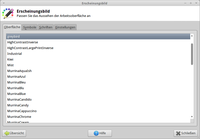
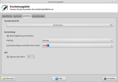
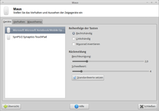
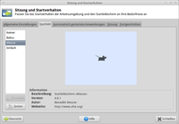

Xfce Themes
Dieser Artikel wurde für die folgenden Ubuntu-Versionen getestet:
Ubuntu 14.04 Trusty Tahr
Zum Verständnis dieses Artikels sind folgende Seiten hilfreich:
 Xfce nutzt wie GNOME und LXDE GTK als Grundlage zur Darstellung der Programmoberflächen. GTK+ ist für das Zeichnen der Fensterelemente zuständig. Jedes auf GTK basierende Programm kann auch unter anderen Desktop-Umgebungen, wie zum Beispiel KDE oder CDE, ausgeführt werden – wenn dort die GTK+-Bibliotheken installiert sind. Um die optische Integration in Qt-basierte Desktops (z.B. KDE) zu verbessern, gibt es den Artikel GTK+ Anwendungen unter KDE.
Xfce nutzt wie GNOME und LXDE GTK als Grundlage zur Darstellung der Programmoberflächen. GTK+ ist für das Zeichnen der Fensterelemente zuständig. Jedes auf GTK basierende Programm kann auch unter anderen Desktop-Umgebungen, wie zum Beispiel KDE oder CDE, ausgeführt werden – wenn dort die GTK+-Bibliotheken installiert sind. Um die optische Integration in Qt-basierte Desktops (z.B. KDE) zu verbessern, gibt es den Artikel GTK+ Anwendungen unter KDE.
xfwm4 ist eine modifizierte und der neuen Oberflächenbibliothek angepasste Version des wenig bekannten, sehr leichtgewichtigen Fenstermanagers Oroborus  . Daraus ergibt sich der Sonderfall, dass unter Xfce Fensterrahmen, Fensterinhalte, Symbole, Mauszeiger nicht über einen gemeinsamen Dialog, sondern über mehrere getrennte Unterpunkte im Einstellungsmanager konfiguriert werden.
. Daraus ergibt sich der Sonderfall, dass unter Xfce Fensterrahmen, Fensterinhalte, Symbole, Mauszeiger nicht über einen gemeinsamen Dialog, sondern über mehrere getrennte Unterpunkte im Einstellungsmanager konfiguriert werden.
Wer die Standard-Fensterdekoration und die Symbole von Ubuntu auch unter Xfce haben möchte: das Projekt RAVEfinity bietet Ambiance & Radiance Themes For Xfce & LXDE und die Humanity Colors Icons an. Wer zu faul ist, sich mit der manuellen Installation auseinanderzusetzen, kann auch ein PPA nutzen.
Installation von Designs¶
|  |
| Designs |
Zur Installation neuer Designs (Themes) muss man das betreffende Designpaket für einzelne Benutzer in den Ordner ~/.themes/ oder mit Root-Rechten nach /usr/share/themes/ für systemweite Zugriffe entpacken [1][2]. Der Pfad sollte dann folgendermaßen aussehen: ~/.themes/DESIGNNAME/ oder /usr/share/themes/DESIGNNAME/, wobei DESIGNNAME dem Namen des Designs entspricht.
Anschließend kann man das neue Design im Einstellungsmanager in den Abschnitten "Fensterverwaltung" (Fensterdekoration) und "Erscheinungsbild" (Fensterinhalt) auswählen.
Hinweis:
Ab Xfce 4.10 bzw. Xubuntu 12.10 können Themen-Archive per Drag&Drop über den Einstellungsmanager installiert werden. Diese werden dann automatisch nach ~/.themes/ entpackt.
Designs aus den offiziellen Paketquellen¶
Verschiedene Designs speziell zur Fensterdekoration können auch aus den offiziellen Paketquellen installiert werden:
xfwm4-themes (universe, Sammlung älterer Themes)
shiki-colors-xfwm-theme (universe)
 mit apturl
mit apturl
Paketliste zum Kopieren:
sudo apt-get install xfwm4-themes shiki-colors-xfwm-theme
sudo aptitude install xfwm4-themes shiki-colors-xfwm-theme
Darüber sind auch Pakete für Fensterinhalte und Symbolzusammenstellungen enthalten, deren Auflistung hier ausufern würde. Generell kann man sagen, dass alle auf GTK2 und 3 basierenden Designs auch unter Xfce genutzt werden können (Symbolzusammenstellungen sind grundsätzlich desktop-unabhängig, mit einer einzigen Ausnahme: KDE).
Schriften¶
|  |
| Schrift |
Um die von Xfce verwendeten Schriften (Fonts) zu verändern, öffnet man im  Anwendungsmenü über
Anwendungsmenü über
"Einstellungen -> Einstellungsmanager -> Benutzerschnittstelle -> Schrift" oder
"Einstellungen -> Einstellungen -> Erscheinungsbild -> Schriften"
den entsprechenden Dialog. Nun kann man zwischen den installierten Schriften auswählen.
Neben der Schriftart kann hier der Stil, z.B. fett und/oder kursiv, und die Größe festgelegt werden. Die integrierte Vorschau verdeutlicht das gewünschte Ergebnis. Mit "OK" werden die Einstellungen übernommen.
Wie man neue Schriften installiert, ist im Artikel Schriften beschrieben.
Symbole und Mauscursor¶
|  |
| Icons und Mauscursor |
Um ein neues Icon- oder Mauscursor-Design installieren zu können, muss man das neue Symbol-Verzeichnis (mit den Bildern) in den Ordner ~/.icons/ oder mit Root-Rechten unter /usr/share/icons/ speichern. Der Pfad sollte dann so aussehen: ~/.icons/NAME/ bzw. /usr/share/icons/NAME/ bei einer systemweiten Installation, wobei NAME wieder dem Themen-Ordner entspricht.
Zum Benutzen des Designs kann man dieses im Einstellungsmanager unter dem Abschnitt "Erscheinungsbild -> Symbole" (für Icons) bzw. "Maus und Touchpad -> Mausthema" (für den Mauscursor) auswählen. Normalerweise wird ein neues Thema sofort verwendet. Sollte es Probleme geben, meldet man sich einmal ab und wieder an.
Hinweis:
Ab Xfce 4.10 bzw. Xubuntu 12.10 können Archive per Drag&Drop über den Einstellungsmanager installiert werden. Diese werden automatisch nach ~/.icons/ entpackt.
Speziell die Einstellung der Größe des Mauszeigers führt immer wieder zu Konfusionen. Warum das so ist, kann dem Artikel Mauszeiger entnommen werden.
Splash Screen¶
|  |
| Splash Screen |
Beim Startbildschirm (Splash-Screen) von Xfce handelt es sich um ein Fenster, das während des Startvorgangs des Fenstermanagers angezeigt wird. Es dient dabei zur Anzeige der startenden Programme und Dienste. In der Grundausstattung von Xubuntu stehen für den Benutzer vier Designs zur Auswahl.
"Keiner:" Schaltet den Splash-Screen aus
"Balou:" Komplettes Bild vom Xfce-Zeichen mit Anzeige der startenden Programme und Dienste. Hauptbestandteil zur Installation weiterer Splash-Screen-Designs. Eigene Designs können erstellt und eingebunden werden.
"Mice:" Blinkendes Maussymbol
"Einfach:" Benutzerspezifisch einstellbarer Splash-Screen. Schriftformatierung, Farbe und zu benutzendes Bild sind selbst auswählbar.
Die einzelnen Designs lassen sich dabei mit der Schaltfläche "Testen" vorher begutachten.
Installation¶
Um einen neuen Splash-Screen installieren zu können, lädt man sich das betreffende Design als gepacktes Archiv herunter und geht dann auf "Einstellungsmanager -> Sitzung und Startverhalten -> Startbild -> Balou -> Einstellen ->  -> Neues Thema installieren" bzw. "Einstellungsmanager -> Splash Screen -> Balou -> Konfigurieren". Nun öffnet sich ein Fenster, in das man das neue Design mit der Maus auswählen oder via Drag'n'Drop ziehen kann. Anschließend ist das neue Design vorgewählt und erscheint beim nächsten Start von Xfce.
-> Neues Thema installieren" bzw. "Einstellungsmanager -> Splash Screen -> Balou -> Konfigurieren". Nun öffnet sich ein Fenster, in das man das neue Design mit der Maus auswählen oder via Drag'n'Drop ziehen kann. Anschließend ist das neue Design vorgewählt und erscheint beim nächsten Start von Xfce.
Links¶
Extern¶
xfce-look.org
- Artwork und Eyecandy für den Xfce-DesktopXfce Theme Manager - fasst die einzelnen Xfce-Konfigurationsdialoge unter einer Oberfläche zusammen
Xfce
 Übersichtsartikel
Übersichtsartikel
- Erstellt mit Inyoka
-
 2004 – 2017 ubuntuusers.de • Einige Rechte vorbehalten
2004 – 2017 ubuntuusers.de • Einige Rechte vorbehalten
Lizenz • Kontakt • Datenschutz • Impressum • Serverstatus -
Serverhousing gespendet von